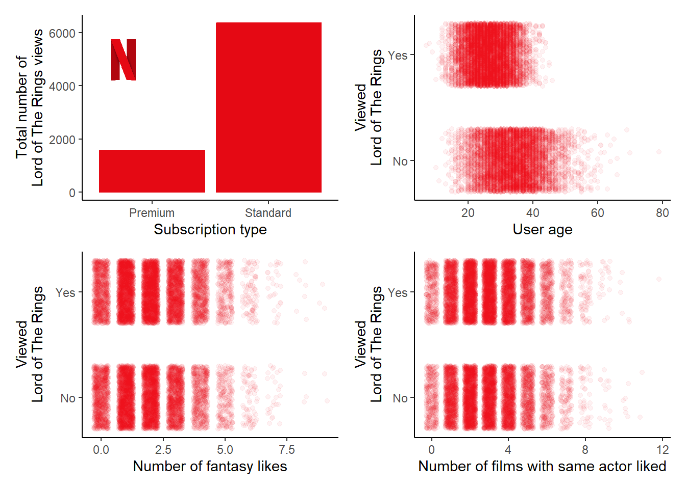
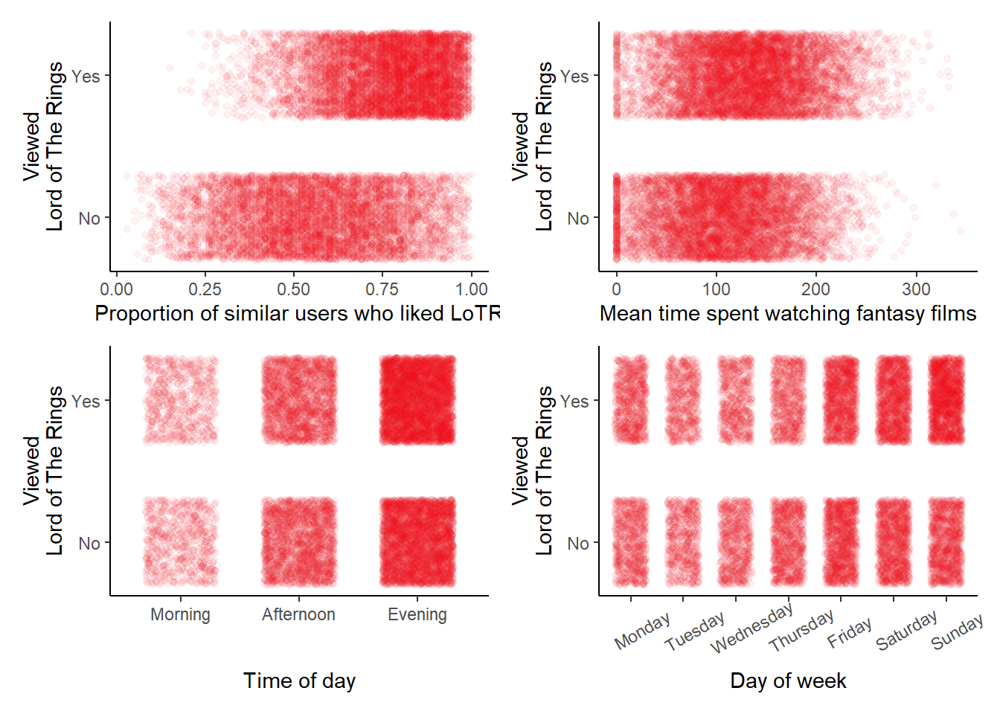
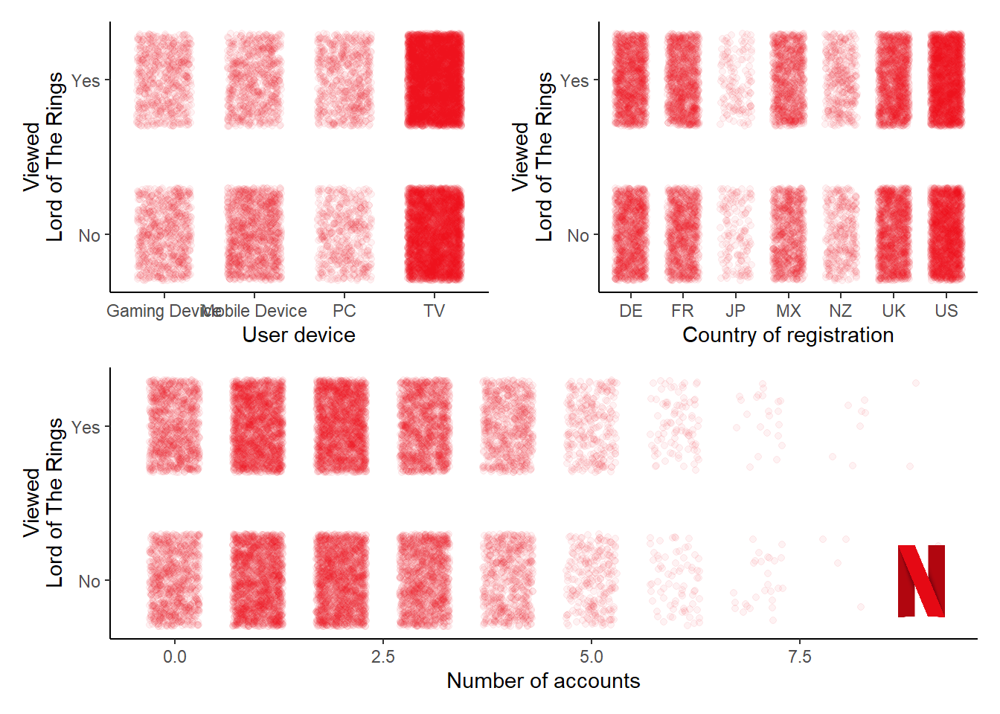

Day 3: Bernoulli GLMs
Bernoulli GLM - Predicting if Netflix users will watch Lord of the Rings: The Fellowship of the Ring
For the GLM exercises, we’ll use the workflow we suggested in the first GLM overview lecture as a template, specifically:
Know your research question!
Think about your response variable (stochastic).
Think about the process behind the data (deterministic).
Understand the data that you’ve collected (plot it!)
Combine into a model that can answer your question.
Fit the model.
Check your assumption(s).
Answer your question.
1. Know your research question!
For this final exercise, we’ll do something that’s, hopefully, a bit fun and silly. We’re going to work with a relatively small Netflix dataset, where we’re going to try and predict if a user will will watch Lord of the Rings: The Fellowship of the Ring. I will admit to a number of ulterior motivations in ending the course using this dataset.
There is a common misconception that Machine Learning is for predicting and Statistics is for understanding. I want to show that this distinction is meaningless. In truth, machine learning is, in general, statistics performed (or in some cases developed) by computer scientists. For example, the GLMs you’ve learned to use on this course are often called Supervised Machine Learning Models in Machine Learning courses. The distinction between the two methods largely comes down to who is teaching you (and who taught them). Indeed, some “classic” machine learning methods such as Random Forest models are just GLMs with a few extra bells and whistles in much the same way that some “classic” statistical methods such as Mixed Effects models are just GLMs with a few extra bells and whistles.
Because people tend to think of there being some sort of distinction between Machine Learning and Statistics, it can result in people, such as yourselves, not realising they have skill-sets that lots of employers (including non-academic) are looking for. By using this Netflix example I want to show that, having taken this course, your employment options have broadened.
In the final and corresponding \(Bernoulli\) GLM lecture, I showed an example where AIC fails miserably. In doing so, I’m at risk of leaving you with the impression that AIC (and also other forms of model and variable selection) should never be used. Therefore, in this exercise we’re going to use an example where AIC is wonderfully well suited for helping achieve our objective. It will also give me an opportunity to talk a little more about how AIC works, and also the controversy and differing opinions on AIC.
I really like Lord of the Rings.
While this exercise takes on an industry focus, this is not specific to \(Bernoulli\) GLMs. Indeed, like all GLMs and LMs, \(Bernoulli\) GLMs can be used for any of the three broad purposes we described in the first lecture: Causal inference, prediction or description.
The data you’ve been provided includes various information that Netflix has on hand about their users, for the purposes of predicting if a user will watch Lord of the Rings (LoTR). To do so, our response variable if whether not a given viewer watched LoTR (1) or not (0).
The covariates we have are: * user - a unique user ID *
lotr - if that user watched LoTR on Netflix *
premium - if the user has Netflix Premium or Standard *
age - the age of the user at the time of data collection *
genre_likes - how many fantasy films/shows the user had
previously liked * actor_likes - how many films/shows the
user had previously liked that included cast members of LoTR *
similar_user_ratins - what lotr of “similar” users had
liked LoTR (“similar” is undefined) * mean_time_genre -
what is the average length of time users watch fantasy media *
user_time - Time of day for user at time of data collection
(Morning, Afternoon and Evening)
* user_day - Day of week for user at time of data
collection (Monday, Tuesday, etc.) *
user_device - Type of device user was logged in from
(TV, PC, Mobile Device and
Gaming Device) * fam_members - Number of
family member accounts tied to subscription * country -
Country of subscription
As concisely as possible, write down the research question that can be answered with our analysis, keeping in mind that Netflix are not interested in understanding causation or writing a scientific paper, they want predictive power.
2. Think about your response variable (the stochastic element).
From the information provided in the description above, we can determine that a \(Bernoulli\) distribution is a sensible one to use here; our data is 0 (user did not watch LoTR) or 1 (user did watch LoTR). Our stochastic element of the model would therefore be:
\(y_i \sim Bernoulli(p_i)\)
Where \(y\) is if user \(i\) watched LoTR or not, generated according to a \(Bernoulli\) distribution, with probability \(p\).
3. Think about the process behind the data (the deterministic element).
Just like the drinking coffee example from the first lecture, the Data Generating Process (DGP) for whether or not someone watches a particular film on Netflix is going to be incredibly complex. A nuance here is that our objective and intended use for this analysis is prediction. When that’s the case, we can be a bit more relaxed about understanding the deep complexity underlying the DGP and instead feel relatively comfortable adding any and all covariates for which we have data, with an important caveat. We must be confident that we are not including any covariates which have no conceivable connection to our response. For example, we wouldn’t want to include average sea surface temperature because it shouldn’t give us any predictive power. But if we’re unlucky, it may be correlated (by pure chance) with LoTR viewership and thus we may think it helps us do predictions (see this website for fun examples of such spurious correlations).
In this dataset, Netflix have collected covariates for the explicit purpose of predicting viewership, so we can be confident that at least someone thinks these variables might give us some predictive power and aren’t spurious correlations.
With that said, our model will still have a deterministic equation
that describes the associations. Given how many variables we have it
would be cruel to task you with writing the equation out in full for a
model that contains all of those covariates. Instead, assume our model
was lotr ~ age + user_time. Use this simplified version of
the model to write out the equation that would underpin it. Note that
age is a continuous variable, and user_time is
a categorical variable with the levels Morning,
Afternoon and Evening.
For this equation, I’m not giving any hints so the difficulty does
spike here. If you’re struggling, ask for help. It really is worthwhile
learning how the syntax lotr ~ age + user_time is
translated into an equation, especially when you’re ready to go beyond
GLMs.
\(logit(p_i) = \text{___}\)
4. Understand the data that you’ve collected (plot it!)
Import the data file ‘netflix.txt’ into R. Take a look at the structure of the data and create plots that you feel will help you (and others) understand the data.
Keep the tips and tricks you used in yesterday’s practical and feel free to use them again here; load in the data, check for any covariates you need to adjust, plot out the data, etc.
A bit of advice for visualising \(Bernoulli\) data; adding a little noise to
the x and y-axis values for each point (i.e. jittering) helps immensely
for visualising. To do so using base R, the
code would be:
plot(jitter(my_data$y) ~ my_data$x)As in yesterday’s lecture and exercise, the my figures below are
produced using ggplot2 and are included purely for
inspiration. I am also using an additional package,
patchwork, to stitch together multiple figures into a
single panel.

5. Combine into a model that can answer your question.
Having gone through the previous steps, it’s now time to run our
model. Keep in mind that with this model, our objective is prediction,
so we’ll be running a model that includes all available covariates
excluding one; user_id as including just this one covariate
will require 15,000 parameters be estimated. We don’t
want that, nor do we have the sample size to support it.
Run the full model (not including user_id), using
glm().
- Hints:
- Because \(Bernoulli\) is really
just a special case of the \(Binomial\)
distribution, we specify
family = binomial - Do we need to specify number of success and number of failures like we did for \(Binomial\) GLMs?
- What is the default link function used by \(Bernoulli\) GLMs?
- Because \(Bernoulli\) is really
just a special case of the \(Binomial\)
distribution, we specify
6. Variable selection
Given that in the lecture I showed an instance where AIC and variable selection failed quite miserably, in this exercise, I wanted to include a scenario where it performs very well.
Note that this discussion below is also true for Likelihood Ratio Testing (LRT). In fact, AIC ends up being the equivalent to LRT, where the P-value threshold to 0.187 rather than 0.05 (see Sutherland et al., 2023).
For that, we need to have a brief discussion about how AIC works, starting with how it is calculated:
\(AIC = 2K - 2ln(\mathcal{\hat{L}})\)
where \(K\) is the number of parameters in our model, \(ln\) is the natural log, and \(\mathcal{\hat{L}}\) is the maximum likelihood value for our given model. (Note that in practice \(-2ln(\mathcal{\hat{L}})\) is used in model fitting for reasons that are not important here).
Think back to the \(Poisson\) GLM lecture where we walked through how \(\mathcal{\hat{L}}\) was derived. In that example, we were just trying different values for each parameter until we hit the “sweet spot” - where our predicted values were closest to our observed values using a particular combination of parameter values. Basically, \(\mathcal{\hat{L}}\) is a value that reflects how well a combination of parameter values results in predicted values that are as close as possible to our actual response variable.
Where AIC comes in, is that it uses this \(\mathcal{\hat{L}}\) value and asks; “Are all of these parameters needed to get to the best fit?” That’s why AIC include the \(2K\) bit. Each parameter has a “cost” associated with it of \(+2 AIC\) units; AIC is a fit-versus-cost trade-off. If the cost of including a parameter in our model does not sufficiently improve our likelihood, then it is considered to be uninformative, and AIC tells us it’s not worth including in the model. The conventional threshold is that if the difference when removing a variable from a model is less than or equal to \(2 \Delta AIC\) (where \(\Delta\) just means difference), then the covariate can be removed.
Going through this process, we are left with the most parsimonious model; the model that has a desired level of accuracy (or prediction) that uses the fewest variables as possible to do so. This is why some statisticians (myself included) tend to think of AIC as a “with-in sample predictive” tool. (Contrast this with “out-of sample prediction” where we use a new dataset to see how well our model predicts the response variable of that new dataset.) All that means is; AIC is a tool that evaluates the predictive ability of a model, in predicting the data that you used to fit the model. With this view of AIC, a parsimonious model simply represents a model that has “good” predictive ability. Importantly, however, such models are not intended to offer insights into causation. Indeed, for causal inference, AIC can be quite harmful.
For example, consider the following scenario. We are interested in the association between ice cream sales and shark attacks. There is no direct causal relationship between these two variables. Instead, it is the number of beach visitors that determines both ice cream sales and shark attacks.
Regardless of causal mechanisms, finding a set of parameter values
that captures the association between ice cream sales and shark attacks
is trivial for glm(). This is what glm() is
designed to do after all - estimate associations. If we were to use AIC
on this hypothetical model it would strongly support including ice cream
sales in the model, because knowing how many ice creams have been sold
is pretty much telling us how many people were at the beach.
Test it out if your skeptical:
set.seed(123) # set seed so results are consistent
N <- 200 # 200 beaches
visitors <- rpois(N, lambda = 10) # generate 200 visitor counts
# Note that icecream does not appear when simulating shark, just visitors
shark <- rbinom(N, size = 1, prob = plogis(-4 + 0.2 * visitors)) # shark attack
# Note that shark does not appear when simulating icecream, just visitors
icecream <- rpois(N, lambda = exp(-5 + 0.5 * visitors)) # number of ice creams
dat <- data.frame(visitors, shark, icecream) # combine into dataset
mod1 <- glm(shark ~ icecream, family = binomial, data = dat) # run bernoulli glm
drop1(mod1) # use AIC to do variable selection
# AIC of full model: 167.29
# AIC of model without icecream: 171.08The upside of this is that including icecream is very
useful if we want to make predictions of shark attacks. For example, if
there are two beaches, the first with very few ice cream sales, and the
second with lots. Which beach is more at risk of shark attacks? Clearly
we can predict the second beach is at higher risk, we just don’t know
why (based on the model).
With that in mind, my view is that AIC is most useful, and least risky, when used for prediction modelling. There are alternatives to AIC, but AIC is still useful never-the-less. Let’s use AIC and variable selection now in order to determine which covariates give us predictive power, and which we can simply ignore when trying to make accurate predictions.
Starting off with the full model and using drop1(),
which covariates can be removed without reducing our predictive
power?
Using drop1() to identify which covariates can be
removed, refit that model.
7. Check your assumption(s).
As always, we want to check how well we’re meeting the assumptions (which we can test).
Start off by using the methods that have served us well for the \(Poisson\) adn \(Binomial\) GLMs,
(e.g. plot(mod2) and summary()). Are these
plots useful? Can we calculate dispersion for a \(Bernoulli\) GLM?
The diagnostics tests we’ve used up to this point have largely failed us for Bernoulli GLMs. As such we need to think of alternative ways to try and check our assumptions. In this instance, we can use the method we discussed in the lecture where we extract the Pearson residuals from the model, and plot these against our explanatory covariates.
Extracting residuals is a pretty easy process. To do so, we use the code:
netflix$resid <- resid(mod2, type = "pearson")With the above code, we’re simply adding a new column to our original
dataset that contains the Pearson residual error for each observation
(\(i\)) based on the model that you fit
(here, called mod2). Now we need to load a package and use
the appropriate function to make plotting residuals and diagnosing a bit
easier: binnedplot from the arm package.
Using these plots, identify any covariates you think we should be concerned about, and why.
Hints: * For categorical variables, we can force these to be numeric,
and therefore use binnedplot() by doing
binnedplot(y = dat$resid, x = as.numeric(dat$category), nclass = 3, xlab = "My categorical variable")


8. Interpret your model.
Having now fit our most parsimonious model, let’s see what we’ve
learnt from it. Use summary() to pull up the coefficients
table and answer the following questions:
- How many parameters have been estimated by this model?
- How might we want to change data collection methods to make the model more efficient in terms of the number of parameters?
- What does the
user_dayFridayEstimate represent? - For every additional family member (
fam_members), how much does the log odds ratio increase by?
9. Create figures to show predicted relationships.
We’re now in a position to show our predicted relationships. To do so, we’re going to recycle the method we used in the \(Binomial\) GLM exercise.
For these predictions, Netflix are especially interested in identifying which type of user to give targeted adverts to on Sunday afternoons, such that they are more likely to watch LoTR. For us, this means we want to make our predictions specific to Sunday afternoons.
So you don’t have to flip back to the \(Binomial\) GLM exercise, here’s the code we used to make our predictions in yesterdays exercise.
# Create a fake dataset to feed into our model equation
synth_data <- expand.grid(
n_staff = median(netflix$n_staff),
policy = "Implemented",
capacity = seq(
from = min(netflix$capacity),
to = max(netflix$capacity),
length.out = 20))
synth_data$pred <- predict(mod1, newdata = synth_data, se.fit = TRUE)
synth_data$pred <- plogis(pred$fit)
synth_data$low <- plogis(pred$fit - pred$se.fit * 1.96)
synth_data$upp <- plogis(pred$fit + pred$se.fit * 1.96)Adapt this code for our current model (i.e. add in the relevant
covariates to expand.grid()) to show the relationships for
age, genre_likes, actor_likes,
similar_user_ratings, mean_time_genre,
user_device and family members
Your figures should resemble (but need not match exactly):

10. The Monkey’s Paw
Having now fit the model and generated predicted relationships to allow Netflix to do targeted advertising, stop. Have a think again about the data. At the end of yesterday’s exercise I explained how that dataset and model had broken the assumption of validity. Can you think of any issues here? Were there any assumptions we broke but that got left behind? What are the consequences of breaking any such assumptions?
11. (Optional) Exploring model diagnostics
As in previous exercises, below I include code to simulate a \(Bernoulli\) dataset to allow you to explore the impact of sample size, model misspecification, and effect size, on model diagnostic plots. The Data Generating Process (DGP) for the dataset is:
\(y_i \sim Bernoulli(p_i)\)
\(logit(p_i) = \beta_0 + \beta_1 \times x_{1,i} + \beta_2 \times x_{2,i} + \beta_3\times x_{3,i} + \beta_4 \times x_{1, i} \times x_{2,i}\)
where you are free to decide what the values for the parameters (\(\beta_{0,...,4}\)) are.
I am also including three additional covariates (\(Z_{1,...,3}\)) which have no effect what-so-ever on \(p\).
Rerun the simulation and analysis varying the sample size
(e.g. N <- 1000), the effect sizes
(e.g. beta_0 <- 10) or the formula of the
glm() (e.g. remove the interaction). Check what effect this
has on the generic diagnostic plots as well as the
binnedplots() from the arm package.
# Set your seed to have the randomness be cosnsitent each time you run the code
# You can change this, or comment it out, if you want to embrase the randomness
set.seed(1234)
# Set your sample size
N <- 500
# Set the number of trials (must be 1 for Bernoulli)
k <- 1
# Create three continuous covariates
x1 <- runif(N, 0, 10)
x2 <- runif(N, 0, 10)
x3 <- runif(N, 0, 10)
# Set your parameter values
beta_0 <- 2.5 # This is the intercept (on link scale)
beta_1 <- 0.2 # This is the slope for the x1 variable (on link scale)
beta_2 <- -1.3 # This is the slope for the x2 variable (on link scale)
beta_3 <- 0.4 # This is the slope for the x3 variable (on link scale)
beta_4 <- 0.05 # The combined effect of x1 and x2 (on link scale)
# Generate your linear predictor on the link scale (i.e. log)
# We don't actually need to use log() here (it's already on the link scale)
linear_predictor_link <- beta_0 + beta_1 * x1 + beta_2 * x2 + beta_3 * x3 + beta_4 * x1 * x2
# Backtransform your linear predictor to the response scale (i.e. exponentiate)
linear_predictor_response <- plogis(linear_predictor_link)
# Generate your response variable using a Poisson random number generator (rpois)
y <- rbinom(N, size = k, prob = linear_predictor_response)
# Note that the above three lines of code are the equivalent to the equations:
# y ~ Bernoulli(p)
# logit(p) = beta_0 + beta_1 * x1 + beta_2 * x2 + beta_3 * x3 + beta_4 * x1 * x2
# Having simulated the data, we now include three additional covariates that do nothing
z1 <- rbeta(N, shape1 = 10, shape2 = 3)
z2 <- rgamma(N, shape = 15, rate = 2)
z3 <- runif(N, min = 0, max = 100)
# Store your data in a dataframe
dat <- data.frame(y, x1, x2, x3, z1, z2, z3)
# Run a Bernoulli GLM
fit <- glm(y ~ x1 + x2 + x3 + x1 : x2 + z1 + z2 + z3,
data = dat,
family = binomial)
# See if the model was able to estimate your parameter values
# and what the dispersion is
summary(fit)
# See how well the model diagnostics perform
par(mfrow = c(2,2))
plot(fit)
# See how AIC reacts to the meaningless variables
drop1(fit)
# Check residuals using the binnedplots
dat$resid <- resid(fit, type = "pearson")
library(arm)
binnedplot(dat$resid, x = x1, nclass = 5, xlab = "x1")
binnedplot(dat$resid, x = x2, nclass = 5, xlab = "x2")
binnedplot(dat$resid, x = x3, nclass = 5, xlab = "x3")
binnedplot(dat$resid, x = z1, nclass = 5, xlab = "z1")
binnedplot(dat$resid, x = z2, nclass = 5, xlab = "z2")
binnedplot(dat$resid, x = z3, nclass = 5, xlab = "z3")End of the Binomial GLM - understanding Multi-drug Resistance Staphylococcus epidermidis